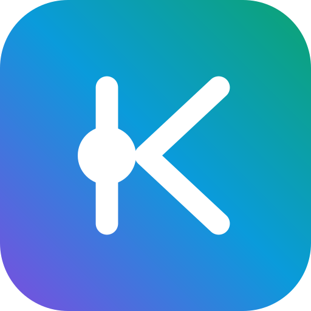

app iconThe mark is a K: the vertical is the stack, the two
edges are the graph, and the dot is the one junction everything routes through — the source of
truth. Three parts, nothing decorative. In plain text where you can't set weights, write it
sTACkTIC — same idea, no artwork needed.
One line to paste into any page:
<link href="https://fonts.googleapis.com/css2?family=Sora:wght@200;400;600;800&family=JetBrains+Mono:wght@400;700&display=swap" rel="stylesheet">
This replaces Fira Code in home.html, product.html and solution.html — those three are the only files still on the old font.
24×24, 2px monoline, round caps, currentColor —
so they take the colour of whatever text they sit next to. Same drawing rules as the logo.